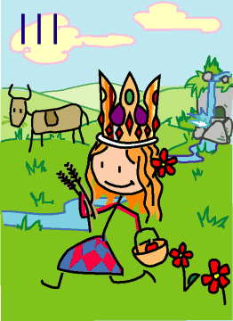

→
Damian Cugley →
Alleged Tarot 2002 →
png →
→
Damian Cugley →
Alleged Tarot 2002 →
png →
| « II. The Papess | IIII. The Emperor » | |
|  | ||
Upright: security, well-being, motherhood
Reversed: insecurity, domestic problems
The Empress is here associated with Demeter or Ceres (goddess of fertility and the seasons). The bounty of nature is represented through civilized symbols: the grain and fruit she carries and the cow in the background represent cultivation and animal husbandry; the rolling hills are the result of agriculture rather than erosion. To a mediaeval person, surrounded by dangerous forests and barren mountains, a tilled field is more attractive than a natural wilderness: enjoying the scenery is a luxury reserved for people who are no longer threatened by it.
Where the Papess represents female spirituality (which the ancients saw as mysterious and scary), the Empress stands for a feminine aspect of temporal authority—and in mediaeval times, women were in charge of food, hearth and home—and not much else.
In magical tradition, the Empress is also the first authority figure in the body–mind–spirit ensemble.
It is a little hard to see this in 2D, but my Empress’s crown has 12 red stones (five of them are on side of her head you can’t see) and four of those round stones in the pointy bits (one of them is hidden). Together with the Zodiac symbols on her dress, these symbolize the annual cycle of the seasons. Red flowers and the red in her dress traditionally represent menstrual blood; the waterfall and the blue in her dress are another symbol of fertility.
See also Thirteen’s description on the Aeclectic Tarot site
If your browser supports SVG, then you should visit the SVG version of this page. It is so much more cool!